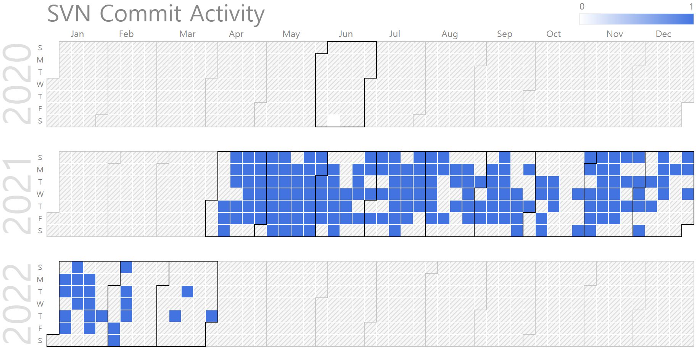

Taewon Chong (Ph.D. Candidate, Senior Engineer in Carnavicom)
Ph.D. Prospective Candidate, Senior Engineer in Carnavicom . |
Repository Commit History
|  |
Introduction
Full Bio Sketch
Mr. Chong received the B.S degree in Electronics Engineering at Korea Polytechnic University, Korea in 2016 and M.S degree in Electronics & Computer Engineering, Chonnam University at Korea in 2018. And now Mr.Chong was a research engineer at Carnvicom.CO., Ltd. from 2015 and Department of Physics, Hanyang University from 2018. He has worked on LiDAR sensor signal processing, developed 3D viewer and developed domain control unit(DCU) for sensors.
Research Topic
 As autonomous driving becomes a hot topics, more sensors are mounted in moving object such as automobiles and agv. It is a limit to processing the data of many sensors in one main processor. In order to reduce the load on the main processor, a module to process sensors data is needed. Since the sensor domain computing unit(DCU) is mainly operated in an environment such as a vehicle where power is nor sufficient, it is necessary to use a low-power processor. I intend to develop a DCU that can collect and process data from multiple LiDAR sensors or other sensors on low-power processor in real-time.
As autonomous driving becomes a hot topics, more sensors are mounted in moving object such as automobiles and agv. It is a limit to processing the data of many sensors in one main processor. In order to reduce the load on the main processor, a module to process sensors data is needed. Since the sensor domain computing unit(DCU) is mainly operated in an environment such as a vehicle where power is nor sufficient, it is necessary to use a low-power processor. I intend to develop a DCU that can collect and process data from multiple LiDAR sensors or other sensors on low-power processor in real-time.
Publications
Journal Publications (KCI 3, SCI 1)
Taewon Chong and Daejin Park. Efficiency Low-Power Signal Processing for Multi-Channel LiDAR Sensor-based Vehicle Detection Platform (KCI) Journal of the Korea Institute of Information and Communication Engineering, 2021.
Taewon Chong and Daejin Park. Adaptive Convolution Filter-based 3D Plane Reconstruction for Low-Power LiDAR Sensor Systems (KCI) Journal of the Korea Institute of Information and Communication Engineering, 2021.
Taewon Chong and Daejin Park. Semantic Depth Data Transmission Reduction Techniques using Frame-to-Frame Masking Method for Light-weighted LiDAR Signal Processing Platform (KCI) Journal of the Korea Institute of Information and Communication Engineering, 2021.
Taewon Chong and Daejin Park. Semantic Depth Data Transmission Reduction Techniques based on Interpolated 3D Plane Reconstruction for Lightweighted LiDAR Signal Processing Platform (SCI) Electronics, 11(14):2135-2152, 2022.
Conference Publications (Intl. 1)
Taewon Chong, Sanghoon Lee, and Daejin Park. Accelerated Signal Processing of Burst-Mode Streamline Data for Low-Power Embedded Multi-Channel LiDAR Systems In IEEE TENSYMP 2021, 2021.
Participation in International Conference
IEEE TENSYMP 2021, Jeju, Korea